Environment
Table of Contents
1 Cave Biomes1.1 Lush Caves
1.2 Dripstone Caves
1.3 Deep Dark
2 Underground Structures
2.1 Abandoned Mineshaft
2.2 Ancient City
2.3 Stronghold
2.4 Ruined Portal
2.5 Monster Room
2.6 Amethyst Geode
2.7 Ore Vein
2.8 Fossil
3 Surface Structures with Underground Portions
3.1 Trail Ruins
3.2 Igloo
3.3 Desert Pyramid
3.4 Ruined Portal
3.5 Jungle Temple
3.6 Shipwreck
3.7 Buried Treasure
Cave Biomes
If you go far enough underground, most places look the same no matter what the surface looks like. Minecraft has three cave biomes, though, which help to break up this monotony by providing different environments.
Lush Caves
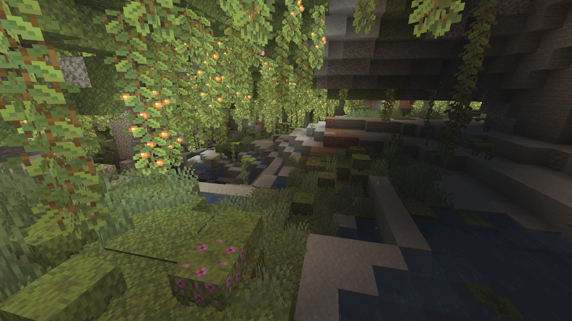Lush Caves are one of your primary sources of wood in this challenge, due to the native Azalea trees being the only renewable source. In addition to Azalea trees, Lush Caves feature clay pools with dripleaves, large patches of moss with azaleas, and hanging vines with and without Glow Berries. They are also the only place to find Axolotls, and the only reliable place to find Tropical Fish underground.
Lush Caves generate about 25 to 115 blocks below the surface, in places with high humidity. Usually the surface in such locations has a heavily wooded biome such as Jungle or Old Growth Taiga, but it can also be a Desert (since in Minecraft deserts are defined by high temperature instead of low humidity) or an Ocean. Lush Caves are the only cave biome that can generate below an Ocean.
Lush Caves are safer from hostile mobs than most places underground, seeing as both the prevalent water and the light from the Glow Berries inhibit their spawning. But these features also make Lush Caves difficult to traverse: water slows your movement and can only be exited onto blocks that are flush with or below the surface, and vines inhibit visibility wherever there are low ceilings. The dripleaves are a double-edged sword when it comes to movement. They can be jumped on top of to climb out of the water pools, but they collapse when stepped on. But the top can't be walked through when it isn't collapsed, which can be a problem when two- or three-block tall dripleaves (which are too tall to jump on) grow on the edges of the pools.
Mining is more difficult in Lush Caves. In the caves themselves, the sheer amount of decoration can make ores difficult to spot. The ever-present water slows down not just movement, but also mining if the player's head is underwater or their feet aren't touching the ground. Finally, clay is tedious to remove since it drops multiple items when broken, and can't be converted into moss.
Dripstone Caves
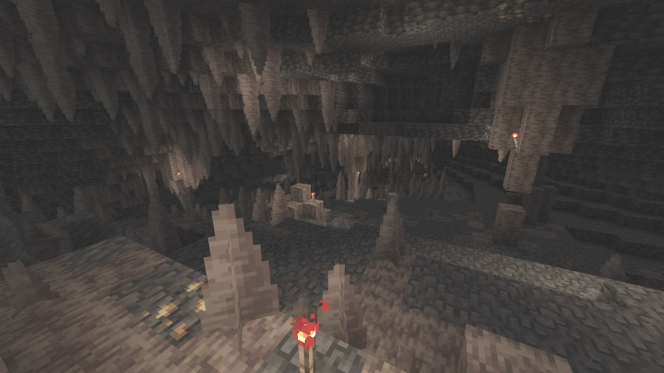Compared to the other two cave biomes, Dripstone Caves look the most like regular Caves that aren't part of a cave biome. The primary difference is the presence of stalactites and stalagmites made of Dripstone, which may have small pools of water mixed in on the floor. Dripstone Caves also feature increased amounts of Copper Ore and naturally spawning Drowned.
Dripstone Caves generate about 25 to 115 blocks below the surface, in places that are very far inland.
In theory I expect Dripstone Caves to be more dangerous than other caves, but I don't know from experience since I haven't spent much time there. Dripstone stalagmites double fall damage when landed on, and stalactites can fall, dealing heavy damage on impact, if their support blocks are removed. Stalactites also fall when hit with a trident, which is the weapon of choice for Drowned mobs, which can spawn here. So while again, I haven't spent much time in the Dripstone Caves, the biome's unique features appear to up the danger level somewhat.
Deep Dark
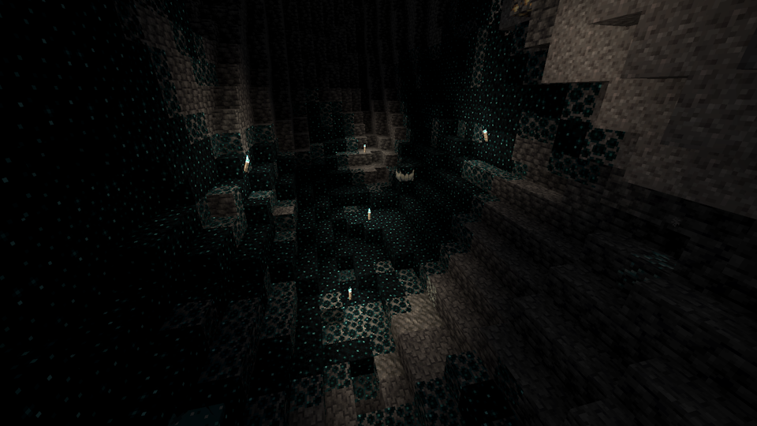The Deep Dark is the creepiest and possibly the most dangerous cave biome. It can be identified by the presence of Sculk, which makes up most of the biome. As a biome, the Deep Dark isn't terribly interesting, as the various Sculk blocks are the only unique generated feature. But it does have a complete lack of mobs other than the Warden, and is the only place to find Ancient Cities.
The Deep Dark generates about 140 or more blocks below the surface, in areas with low erosion. Seeing as the bottom of the world is only 126 blocks below sea level, the Deep Dark will be primarily found where the surface has high elevation.
Surviving the Deep Dark requires different skills than anywhere else in Minecraft. The primary threat is the Sculk Shriekers that can be found dotted around: if a player steps on them or activates a nearby Sculk Sensor, they let out a loud shriek, give the player the Darkness effect (which hinders vision), and if four were activated within a few minutes, causes the Warden to spawn. Sculk Sensors can be activated by many common player actions, including eating, walking without sneaking, firing a bow, dropping any item that isn't wool, or breaking or placing any block that isn't wool, meaning the player must remain vigilant in order to avoid activating any Sensors. Survival is primarily oriented around avoiding or breaking the Shriekers. Areas devoid of Shriekers are a good place to live due to the lack of hostile mobs.
Underground Structures
Abandoned Mineshaft
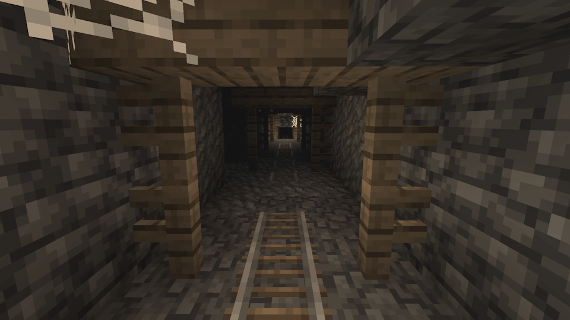
Abandoned Mineshafts are the other common source of underground wood besides Lush Caves.
(Up to 57% of the wood is in the form of fence posts, which are useless for crafting,
but there is so much present that it doesn't matter.)
Mineshafts consist mostly of three-block wide tunnels with wooden support beams, and are
commonly decorated with cobwebs, torches, and broken Minecart tracks. When the tunnels
intersect caves, they generate a bridge of wood planks which may be supported by chains
above or log pillars below. Chest minecarts can be found on some of the tracks, and
Cave Spider spawners occupy some of the tunnels.
Tunnels with Cave Spider spawners are obstructed by a large number of cobwebs.
Fully exploring and lighting a Mineshaft can be a major chore due to their size, the
difficulty of navigating often tight spaces containing cobwebs, and of course the Cave
Spiders. It is worth it, though, as they have a large surface area that exposes
significantly more ore than caves do, and there's also the chest loot to look forward to,
and the wood to collect. Even the Cave Spider spawners provide benefit to the player
once the shaft is lit, since they can be used to make a string farm. More spawners close
together make a better farm; double spawners aren't that uncommon.
Mineshafts generate in every biome except Deep Dark, though those that generate in one of
the three Badlands (Mesa) biomes are Mesa mineshafts. Normal mineshafts have oak wood and
are found at all heights below sea level, and Mesa mineshafts have dark oak wood and are
found between sea level and the world surface (if higher).
The chest minecart loot is listed at Chest Loot.
Ancient City
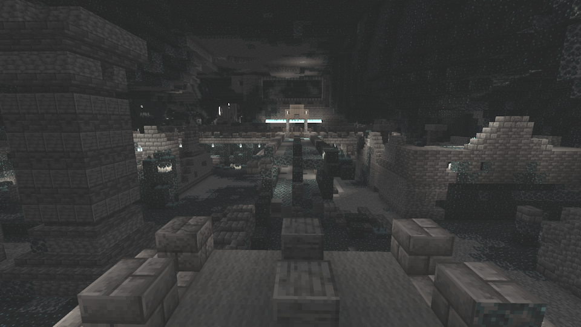
Ancient Cities are a massive structure found at Y -51 in the Deep Dark. The majority
of the structure is formed from Deepslate and Basalt, but there is a significant amount
of Wool and Dark Oak wood as well. From the city center containing of a giant statue
of the Warden and a hidden redstone lab, passages with a floor of Wool branch out.
Various smaller structures are found along the sides of the passages. Some of these
smaller structures have loot chests; however, the ones with loot chests tend to also
have Sculk Sensors and Shriekers.
Ancient Cities are the only place where you can find Skeleton Skulls; they are also
the only place in the Overworld where there is Soul Sand or Soil (typically Nether
resources), and the chest loot has several other unique items. The chest loot is
listed at Chest Loot.
Stronghold
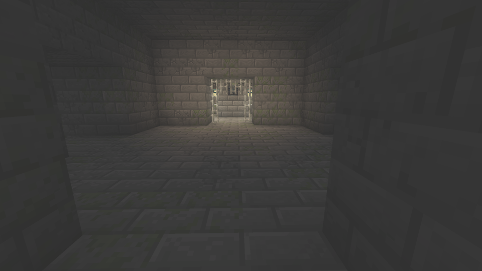
Strongholds are a rare underground structure, and the only Overworld structure that is mandatory to
visit in order to reach the Ender Dragon. They can be located using Eyes of Ender; see
Walkthrough/Finding Strongholds .
Strongholds take the form of a dungeon made from Stone Bricks, mostly divided into short three-block
wide corridors and occasional larger rooms. The most important room is the End Portal room, followed
by the libraries (which there are usually two of). Loot can be found in chests in the library (one on
each floor of two-story libraries), on slab altars in some corridors, and in the crossing room variant
with a low wooden ceiling, on top of the ceiling.
Strongholds are infested with Silverfish. 10% of all Stone Brick
blocks have Silverfish in them which come out and attack when the block is broken without Silk Touch
or when another Silverfish is attacked, and there is a spawner in the End Portal room. The player
being swarmed by Silverfish is consequently very likely. Most of the stronghold can be navigated
without breaking blocks, with the sole exception that the five-way crossing room (the one with a
bridge made of smooth stone slabs) can sometimes block off the side exits with indistinct walls.
Interestingly, strongholds are placed in the world in a different way than any other structure.
In Java Edition, each world has exactly 128 strongholds, generated in eight rings around the origin.
The smallest ring contains three strongholds, each of which are generated between 1280 and 2816 blocks
from the origin, and the largest ring has nine strongholds between 22784 and 24320 blocks from the
origin. In Bedrock Edition, strongholds generate randomly like any other structure, except for the
addition of three strongholds fairly close to the origin, which have villages above them on the
surface.
The chest loot is listed at Chest Loot.
Ruined Portal
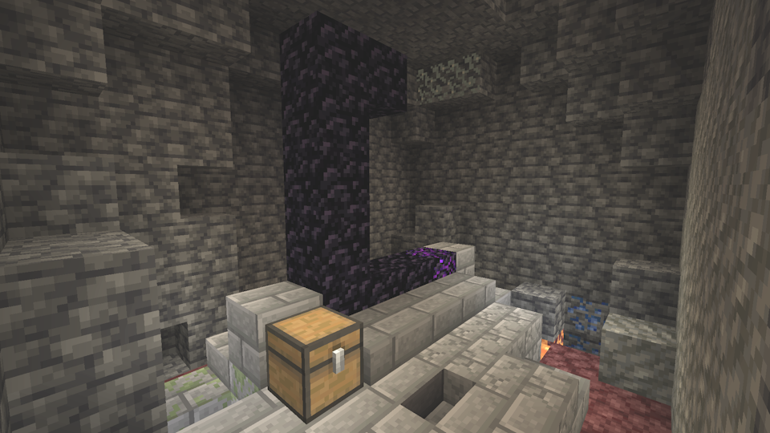
Ruined Portals are a small Stone Brick structure containing a damaged Nether Portal frame.
In addition to the frame, there is a chest with gold and fire related items, and there may
or may not be one or more Gold Blocks. Additionally, Ruined Portals generate a patch of
Netherrack, Lava, and Magma Block that spreads through the terrain.
Ruined Portals generate with 15-20% Crying Obsidian, but Nether Portals can only be built
with regular Obsidian, not Crying Obsidian. Often Ruined Portals are larger than the
minimum size for a Nether Portal, though, and the chest can also have Obsidian, so using a
Diamond Pickaxe it is sometimes possible to mine the regular Obsidian and build a working
Nether Portal with it.
Most Ruined Portals are found on the surface, but they can be occasionally found
underground, too. In biomes with the Mountain variant (specifically Windswept Hills and
its variants, Stony Shore, Savanna Plateau, Windswept Savanna, Wooded Badlands, and Eroded
Badlands), underground Ruined Portals generate above Y:70; in other biomes in which there
can be underground Ruined Portals, they generate above Y:-49 (including in the previous
range). Ruined Portals are never found underground in Deserts, any of the nine Ocean
biomes, any of the three Jungle biomes, or either of the two Swamp biomes.
The chest loot is listed at Chest Loot.
Monster Room
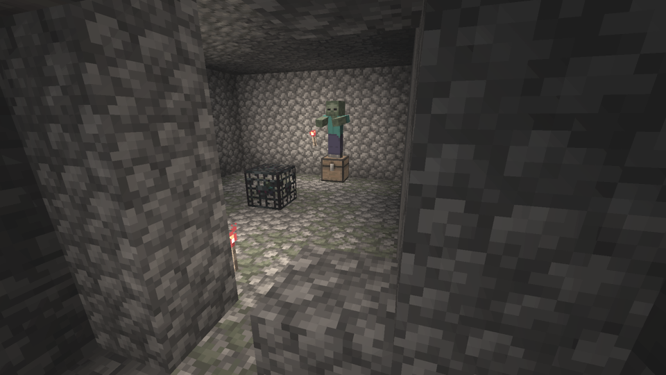
Monster Rooms are small cobblestone rooms with up to two loot chests and a mob spawner.
They are commonly found attached to larger structures, such as Strongholds and Abandoned
Mineshafts. The spawner inside is useful for making a mob farm, provided you don't break
it. 50% of Monster Rooms have a Zombie spawner, 25% have
a Skeleton spawner, and 25% have a
Spider spawner.
Technically, Monster Rooms are features and not structures, so they still generate
even if Generate Structures was turned off in the world settings. In every Overworld
biome, the game tries to place a Monster Room ten times per chunk above Y:0 and four times
below Y:0, but it only succeeds if the potential Room would have a solid ceiling and floor,
and at least one entrance at floor level. This makes Monster Rooms fairly uncommon, and
always attached to a cave or another structure.
The chest loot is listed at Chest Loot.
Amethyst Geode
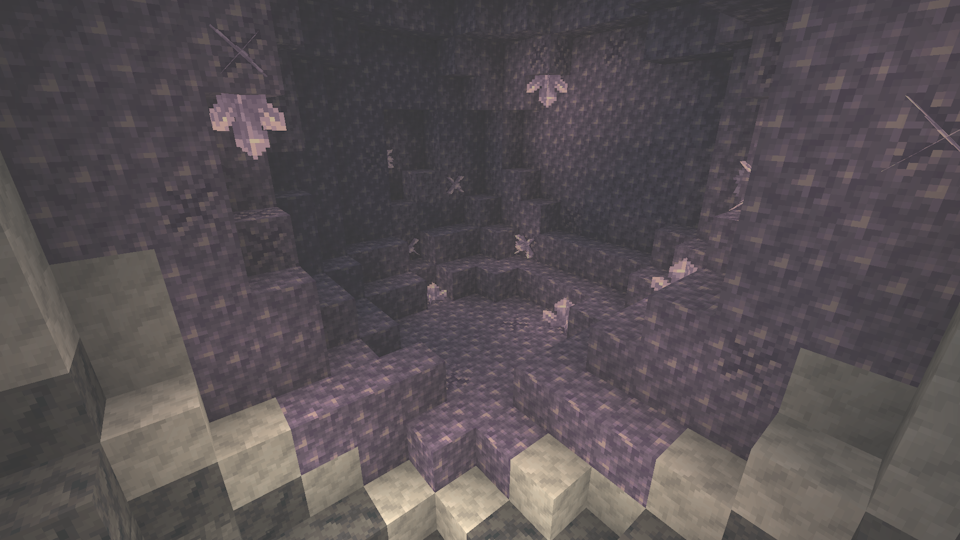
Amethyst Geodes are a round hollow feature made of Smooth Basalt, Calcite, and Amethyst
blocks. They are the only place where there are Budding Amethyst blocks, which gradually
grow Amethyst Clusters on every unobstructed side, but can't be moved. Budding Amethyst
can be distinguished from regular Amethyst blocks by the large "X" on the side.
There is an Amethyst Geode in one of every 64 chunks. They are features not structures,
so they still generate even if Generate Structures was turned off in the world settings.
Ore Vein
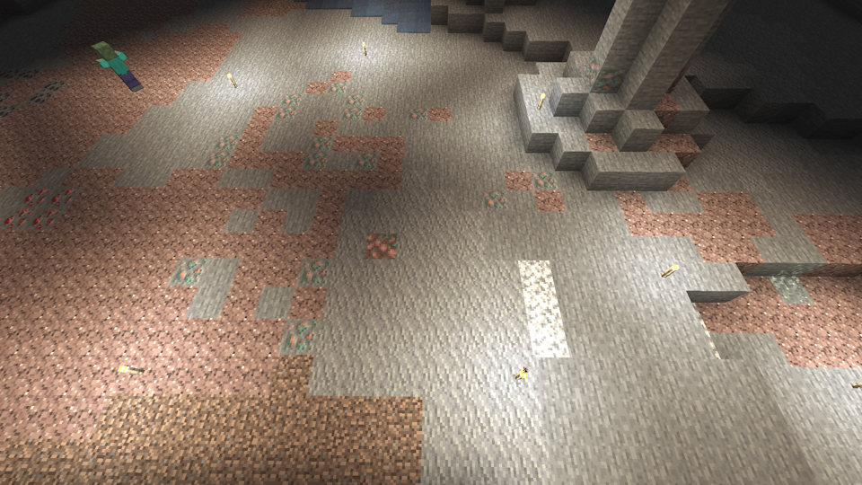
Ore Veins are long, snakelike veins of metal ore that generate underground, potentially
containing hundreds to thousands of ore. Besides the regular ore, they also contain the
block of raw ore, and a corresponding stone type, which makes up a majority of the blocks
in the vein. Copper ore veins generate between Y:0 and Y:50 and have granite as
their stone type, while iron ore veins generate between Y:-60 and Y:-8 and have tuff as
their stone type. There are no gold ore veins.
Ore veins are technically neither a structure nor a feature, but are generated in a
similar way to noise caves, a relationship that is revealed by comparing their shape
to that of caves. Since they are not structures, they still generate even if Generate
Structures was turned off in the world settings.
Fossil
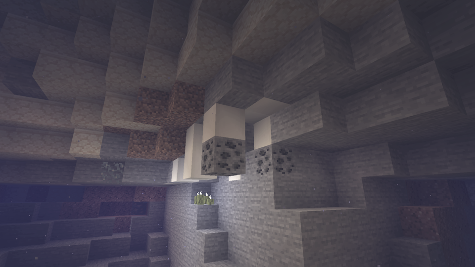
Fossils are small underground features made from Bone Blocks and Coal Ore (above Y:0)
or Deepslate Diamond Ore (below Y:-8). There are four skull structures and four spine
structures.
Fossils generate below Deserts, Swamps, and Mangrove Swamps. They can generate at any
elevation except the range from Y:-8 to Y:0. Since they are features not structures,
they still generate even if Generate Structures was turned off in the world settings.
Abandoned Mineshaft
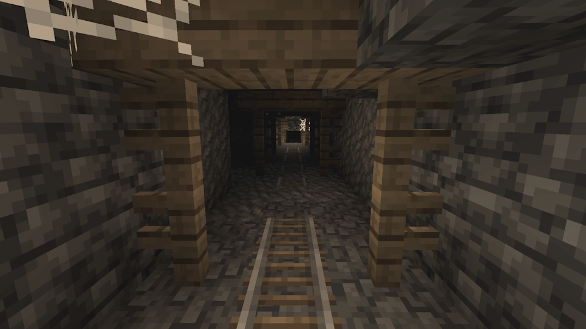Abandoned Mineshafts are the other common source of underground wood besides Lush Caves. (Up to 57% of the wood is in the form of fence posts, which are useless for crafting, but there is so much present that it doesn't matter.)
Mineshafts consist mostly of three-block wide tunnels with wooden support beams, and are commonly decorated with cobwebs, torches, and broken Minecart tracks. When the tunnels intersect caves, they generate a bridge of wood planks which may be supported by chains above or log pillars below. Chest minecarts can be found on some of the tracks, and Cave Spider spawners occupy some of the tunnels. Tunnels with Cave Spider spawners are obstructed by a large number of cobwebs.
Fully exploring and lighting a Mineshaft can be a major chore due to their size, the difficulty of navigating often tight spaces containing cobwebs, and of course the Cave Spiders. It is worth it, though, as they have a large surface area that exposes significantly more ore than caves do, and there's also the chest loot to look forward to, and the wood to collect. Even the Cave Spider spawners provide benefit to the player once the shaft is lit, since they can be used to make a string farm. More spawners close together make a better farm; double spawners aren't that uncommon.
Mineshafts generate in every biome except Deep Dark, though those that generate in one of the three Badlands (Mesa) biomes are Mesa mineshafts. Normal mineshafts have oak wood and are found at all heights below sea level, and Mesa mineshafts have dark oak wood and are found between sea level and the world surface (if higher).
The chest minecart loot is listed at Chest Loot.
Ancient City
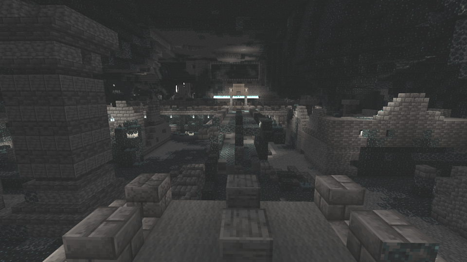Ancient Cities are a massive structure found at Y -51 in the Deep Dark. The majority of the structure is formed from Deepslate and Basalt, but there is a significant amount of Wool and Dark Oak wood as well. From the city center containing of a giant statue of the Warden and a hidden redstone lab, passages with a floor of Wool branch out. Various smaller structures are found along the sides of the passages. Some of these smaller structures have loot chests; however, the ones with loot chests tend to also have Sculk Sensors and Shriekers.
Ancient Cities are the only place where you can find Skeleton Skulls; they are also the only place in the Overworld where there is Soul Sand or Soil (typically Nether resources), and the chest loot has several other unique items. The chest loot is listed at Chest Loot.
Stronghold
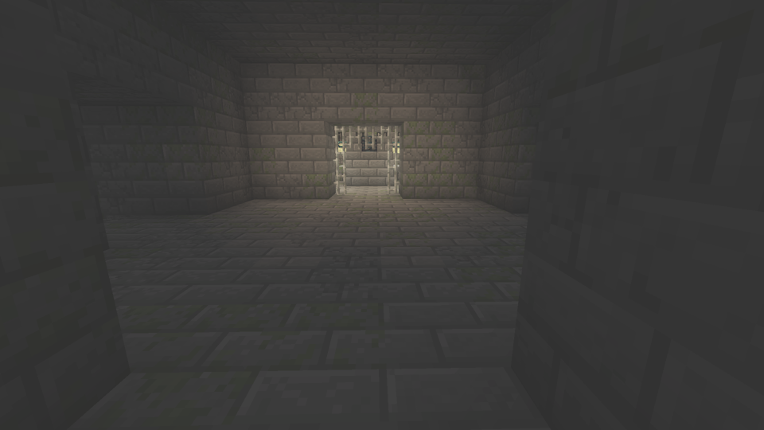Strongholds are a rare underground structure, and the only Overworld structure that is mandatory to visit in order to reach the Ender Dragon. They can be located using Eyes of Ender; see Walkthrough/Finding Strongholds .
Strongholds take the form of a dungeon made from Stone Bricks, mostly divided into short three-block wide corridors and occasional larger rooms. The most important room is the End Portal room, followed by the libraries (which there are usually two of). Loot can be found in chests in the library (one on each floor of two-story libraries), on slab altars in some corridors, and in the crossing room variant with a low wooden ceiling, on top of the ceiling.
Strongholds are infested with Silverfish. 10% of all Stone Brick blocks have Silverfish in them which come out and attack when the block is broken without Silk Touch or when another Silverfish is attacked, and there is a spawner in the End Portal room. The player being swarmed by Silverfish is consequently very likely. Most of the stronghold can be navigated without breaking blocks, with the sole exception that the five-way crossing room (the one with a bridge made of smooth stone slabs) can sometimes block off the side exits with indistinct walls.
Interestingly, strongholds are placed in the world in a different way than any other structure. In Java Edition, each world has exactly 128 strongholds, generated in eight rings around the origin. The smallest ring contains three strongholds, each of which are generated between 1280 and 2816 blocks from the origin, and the largest ring has nine strongholds between 22784 and 24320 blocks from the origin. In Bedrock Edition, strongholds generate randomly like any other structure, except for the addition of three strongholds fairly close to the origin, which have villages above them on the surface.
The chest loot is listed at Chest Loot.
Ruined Portal
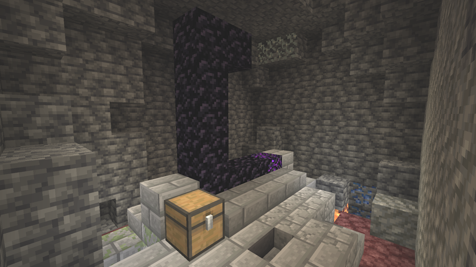Ruined Portals are a small Stone Brick structure containing a damaged Nether Portal frame. In addition to the frame, there is a chest with gold and fire related items, and there may or may not be one or more Gold Blocks. Additionally, Ruined Portals generate a patch of Netherrack, Lava, and Magma Block that spreads through the terrain.
Ruined Portals generate with 15-20% Crying Obsidian, but Nether Portals can only be built with regular Obsidian, not Crying Obsidian. Often Ruined Portals are larger than the minimum size for a Nether Portal, though, and the chest can also have Obsidian, so using a Diamond Pickaxe it is sometimes possible to mine the regular Obsidian and build a working Nether Portal with it.
Most Ruined Portals are found on the surface, but they can be occasionally found underground, too. In biomes with the Mountain variant (specifically Windswept Hills and its variants, Stony Shore, Savanna Plateau, Windswept Savanna, Wooded Badlands, and Eroded Badlands), underground Ruined Portals generate above Y:70; in other biomes in which there can be underground Ruined Portals, they generate above Y:-49 (including in the previous range). Ruined Portals are never found underground in Deserts, any of the nine Ocean biomes, any of the three Jungle biomes, or either of the two Swamp biomes.
The chest loot is listed at Chest Loot.
Monster Room
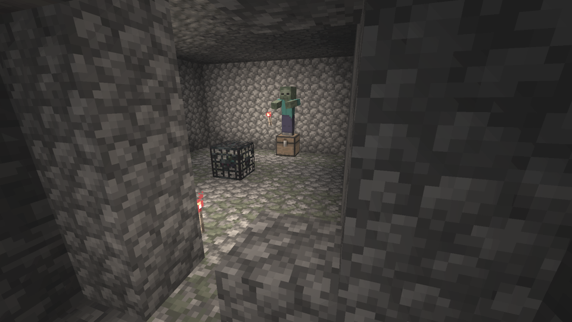Monster Rooms are small cobblestone rooms with up to two loot chests and a mob spawner. They are commonly found attached to larger structures, such as Strongholds and Abandoned Mineshafts. The spawner inside is useful for making a mob farm, provided you don't break it. 50% of Monster Rooms have a Zombie spawner, 25% have a Skeleton spawner, and 25% have a Spider spawner.
Technically, Monster Rooms are features and not structures, so they still generate even if Generate Structures was turned off in the world settings. In every Overworld biome, the game tries to place a Monster Room ten times per chunk above Y:0 and four times below Y:0, but it only succeeds if the potential Room would have a solid ceiling and floor, and at least one entrance at floor level. This makes Monster Rooms fairly uncommon, and always attached to a cave or another structure.
The chest loot is listed at Chest Loot.
Amethyst Geode
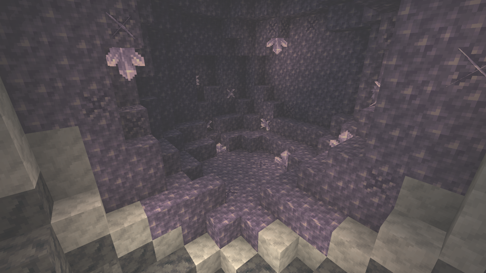Amethyst Geodes are a round hollow feature made of Smooth Basalt, Calcite, and Amethyst blocks. They are the only place where there are Budding Amethyst blocks, which gradually grow Amethyst Clusters on every unobstructed side, but can't be moved. Budding Amethyst can be distinguished from regular Amethyst blocks by the large "X" on the side.
There is an Amethyst Geode in one of every 64 chunks. They are features not structures, so they still generate even if Generate Structures was turned off in the world settings.
Ore Vein
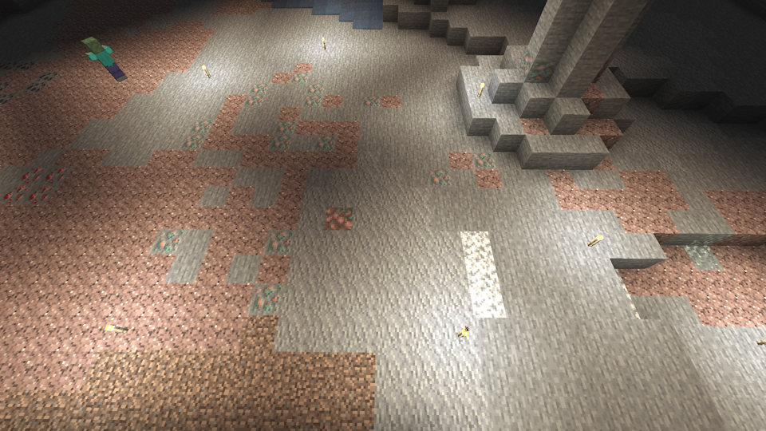Ore Veins are long, snakelike veins of metal ore that generate underground, potentially containing hundreds to thousands of ore. Besides the regular ore, they also contain the block of raw ore, and a corresponding stone type, which makes up a majority of the blocks in the vein. Copper ore veins generate between Y:0 and Y:50 and have granite as their stone type, while iron ore veins generate between Y:-60 and Y:-8 and have tuff as their stone type. There are no gold ore veins.
Ore veins are technically neither a structure nor a feature, but are generated in a similar way to noise caves, a relationship that is revealed by comparing their shape to that of caves. Since they are not structures, they still generate even if Generate Structures was turned off in the world settings.
Fossil
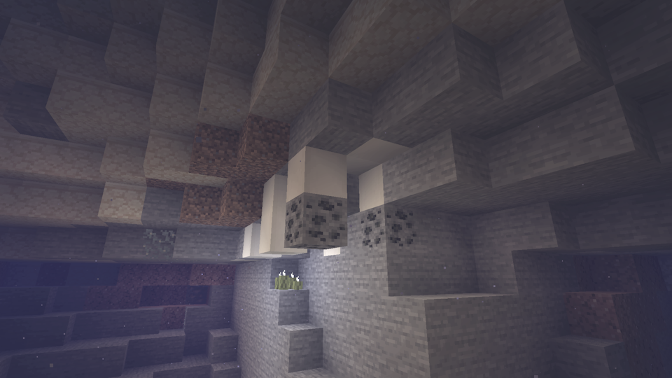Fossils are small underground features made from Bone Blocks and Coal Ore (above Y:0) or Deepslate Diamond Ore (below Y:-8). There are four skull structures and four spine structures.
Fossils generate below Deserts, Swamps, and Mangrove Swamps. They can generate at any elevation except the range from Y:-8 to Y:0. Since they are features not structures, they still generate even if Generate Structures was turned off in the world settings.
Surface Structures with Underground Portions
These structures generate either on, over, or embedded in the surface of the world, but some significant portion of each commonly generates underground.
Trail Ruins
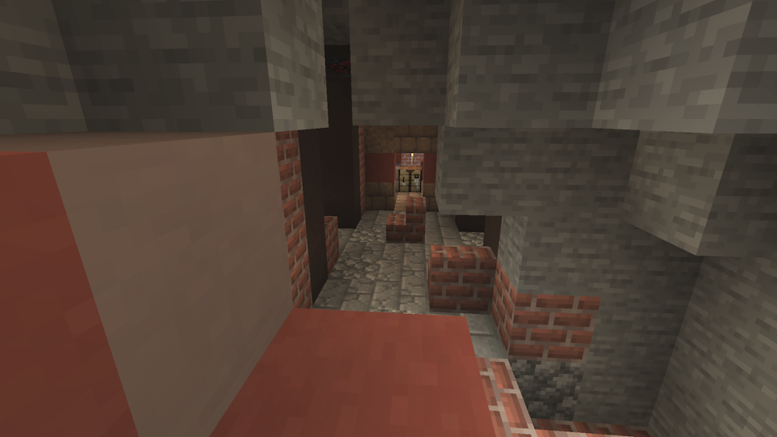Trail Ruins are the buried remains of ancient villages. The majority of the structure is underground, but there is a tower at the center whose peak pierces the surface. On Bedrock Edition, the tower peak may be separated from the remainder of the tower by several layers of stone. Trail Ruins are comprised mostly of Bricks, Mud Bricks, Terracotta, and Cobblestone.
Every open space in the structure is filled with a mixture of Dirt, Coarse Dirt, Gravel, and Suspicious Gravel. There are no loot chests, but a range of items can be obtained by brushing the Suspicious Gravel, several of which aren't found anywhere else. Care must be taken, because if the Suspicious Gravel falls or is broken, the item inside is destroyed. Suspicious Gravel can be distinguished from regular Gravel by the dark spot in the middle.
The items that can be obtained from suspicious gravel are listed at Archaeology Loot.
Igloo
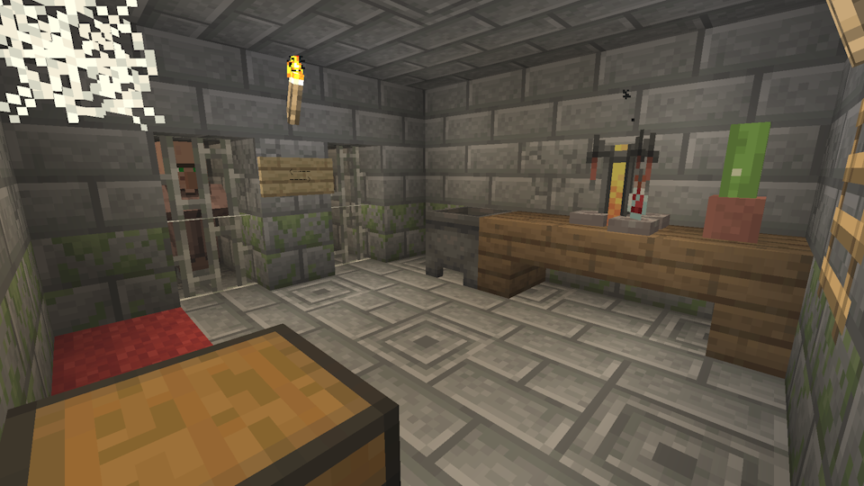Igloos commonly have a hidden basement 21 blocks below the floor, accessed via a ladder. The basement is made of stone bricks with some Silverfish, and contains a cobweb, a cactus, a cauldron, a brewing stand with a weakness splash potion, a Villager, a Zombie Villager, and a loot chest.
Igloos generate in Snowy Plains, Snowy Taiga, and Snowy Slopes.
The chest loot is listed at Chest Loot.
Desert Pyramid
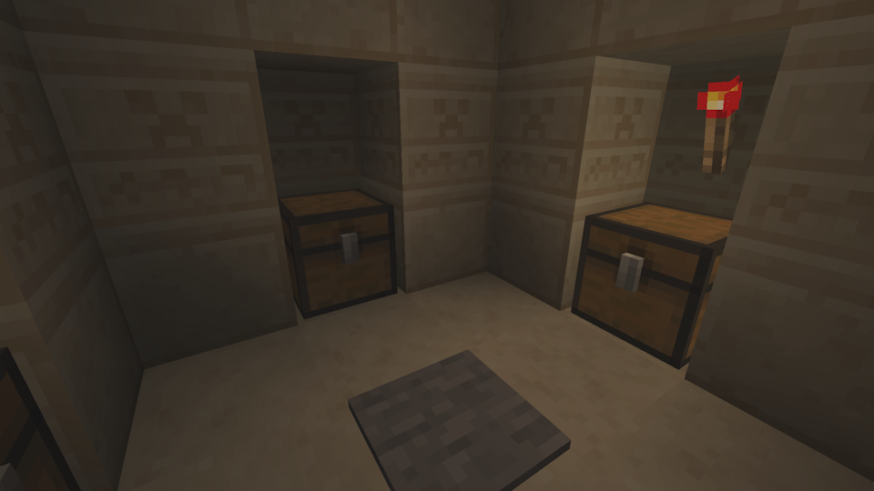Desert Pyramids have a sealed basement 12 blocks below the main floor, with a TNT booby trap and four loot chests. The trap is triggered by the stone pressure plate in the center of the room, and can be disabled by breaking the plate.
New to the latest update, there is a second hidden room in the main floor which is filled with Sand and Suspicious Sand. Like in the Trail Ruins, items can be obtained by brushing the Suspicious Sand, which can be distinguished from regular Sand by its rougher texture.
The chest contents are listed at Chest Loot. The items that can be obtained from suspicious sand are listed at Archaeology Loot.
Ruined Portal
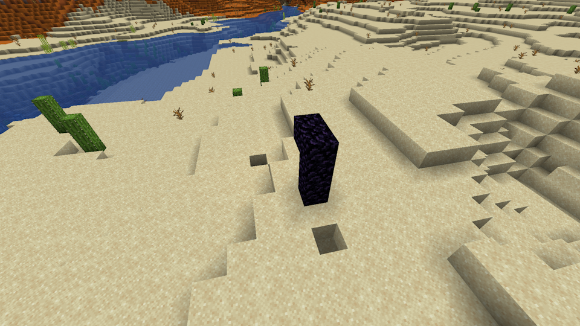In Deserts, Ruined Portals generate embedded in the ground with 2-8 layers above the surface.
The structures and chest loot are the same as all other Ruined Portals.
Jungle Temple
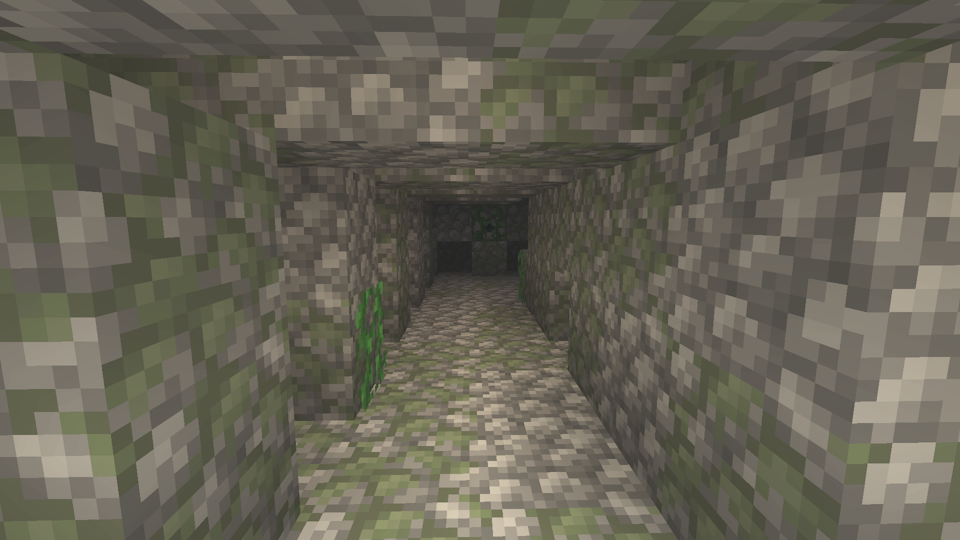Jungle Temples have a basement 4 blocks below the main floor. Depending on the terrain, the basement may be either slightly below ground level, or partially above the ground.
The Jungle Temple basement has a lever puzzle that opens a hidden room on the main floor with a loot chest, and there is a second chest guarded by two arrow traps triggered by tripwires.
The chest contents are listed at Chest Loot.
Shipwreck
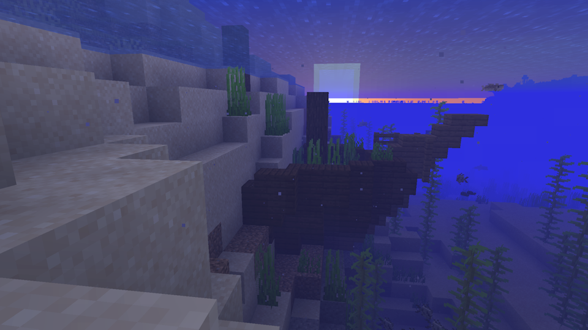Shipwrecks usually generate out in the ocean, but sometimes they are found embedded in the ground on beaches. The wood types they are made of are random, either the front or back half of the ship may be missing, and they can be turned upside down or onto their side.
There are three potential loot chests: the supply chest in the bow, the map chest in the stern, and the treasure chest in the stern. Their contents are listed at Chest Loot.
Buried Treasure
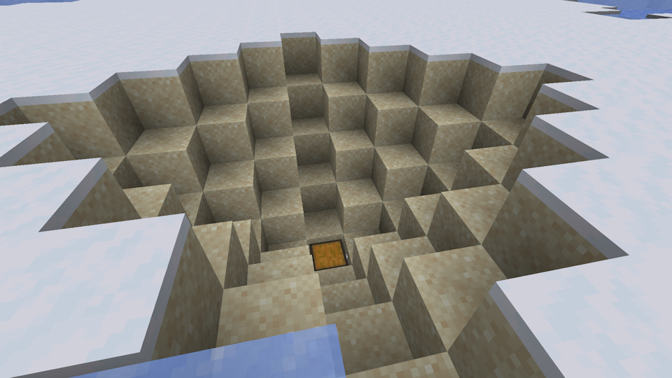Buried Treasure is a lone chest that generates under beaches. Assuming it is on the actual beach, it generates on top of the highest block that isn't sand; however, it is not uncommon for the chest to generate a ways out to sea, in which case there will be at least one block above it, but said block may not be sand.
The contents of the chest are listed at Chest Loot.